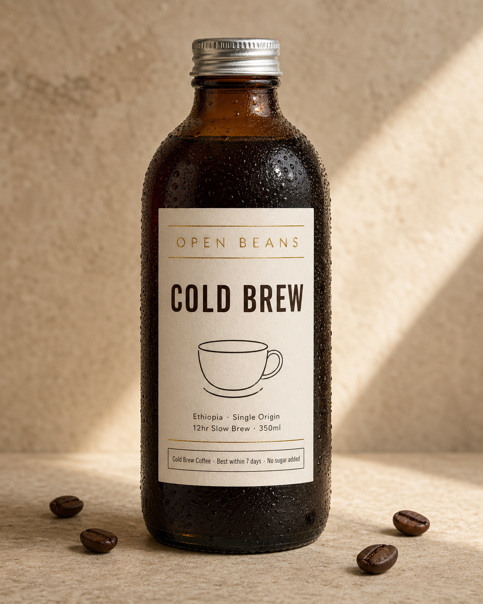

返回課程首頁
(B6)
飲料瓶身標籤設計
飲料、瓶罐食品、調味品的「瓶身 + 標籤」一張到位視覺。AI 生圖 同時做標籤設計與瓶身攝影、適合產品發布主圖、群眾募資視覺、新品 EDM。是手作品牌、精釀品牌、本地飲料品牌最高頻的視覺需求。
這張卡片你會學到
能判斷何時用瓶身標籤設計（與 B3 影棚、B4 包裝展示的差異）
能拆解模板的 6 段 prompt 結構，同時把標籤平面設計 + 瓶身攝影一張產出
能識別 4 種常見踩雷（標籤字級太亂／瓶身反光蓋字／標籤與瓶身色衝突／插畫太複雜）並修正
(01)
適用場景
這個模板用在哪
飲料瓶／食品罐／調味瓶等的「瓶身攝影 + 標籤設計」一張到位。AI 生圖 同時搞定平面設計（標籤排版）+ 商業攝影（瓶身質感）。比 B3 影棚少了戲劇光、比 B4 沒禮盒、比 B1 多了標籤平面設計層。
四個典型用途：
- 飲料品牌新品發布主圖（手沖咖啡冷萃、台灣果汁、精釀啤酒、台灣茶飲）
- 群眾募資視覺（嘖嘖、flyingV、Kickstarter 上線）
- 瓶身設計提案視覺（給品牌客戶看包裝設計概念稿）
- 調味品 / 食品罐頭主圖（醬料、果醬、蜂蜜、本地小農品牌）
| 對比項 | 本卡片 · B6 瓶身標籤設計 | 近似模板 |
|---|---|---|
| 視覺主體 | 瓶身 + 標籤（兩者並重） | B1：純商品；B3：純氛圍；B4：盒子＋內容物 |
| 標籤設計 | 必含：品名、容量、產地、營養標 | B1/B3：用既有標籤；B4：外盒包裝為主 |
| 插畫元素 | 常含（極簡線稿、工筆、復古印花） | 其他模板：通常無 |
| 瓶身材質 | 玻璃／鋁罐／PET／陶瓷各別處理 | B1：以 SKU 主圖為準 |
| 使用時機 | 新品發布 / 群募 / 包裝提案 | B1：日常上架；B4：節慶禮盒 |
| 接案類型 | 包裝設計師、本地小農品牌 | B5：行銷部門；B3：品牌方 |
一句話判斷：客戶問「能不能幫我做一個瓶子」走 B6；問「群募視覺」走 B6；問「給客戶看包裝提案」走 B6。B6 是手作品牌客戶的入門必修——一張圖能省掉「找平面設計師 + 找攝影師」兩條成本，NT$5000-12000 接案區間最甜。
(02)
模板拆解｜6 段 prompt 結構
原模板把一張瓶身標籤視覺拆成 6 段。核心難度在「標籤資訊層級」——標籤同時要有品牌、品名、產地、容量、營養標，4-5 種字級必須清楚分層：
| 段 | 段落 | 必問還是可預設 | 填什麼 |
|---|---|---|---|
| 1 | brand 品牌 | 必問 | 品牌名 + 品類定位（咖啡 / 茶 / 果汁 / 啤酒）+ 品名 + 容量 |
| 2 | bottle 瓶身形態 | 必問 | 瓶型（短粗 / 高瘦 / 鋁罐 / PET）+ 材質（玻璃透明 / 茶色 / 磨砂）+ 蓋子（金屬 / 木塞 / 噴嘴） |
| 3 | label_design 標籤設計 | 必問 | 風格（國潮 / 日式 / 西式 / 復古 / 極簡）+ 標籤主色（≤ 2 色）+ 字體層級（品牌字大 + 品名中 + 規格小）+ 插畫（極簡線稿 / 工筆 / 印花） |
| 4 | info_strip 標籤底部資訊條 | 常含 | 營養成分 + 容量 + 配料表 + 警示語（極小字、灰色） |
| 5 | scene 場景 | 可預設 | 背景表面（亞光石面 / 木紋 / 純色），輔助道具（同類別、≤ 3 個） |
| 6 | 限制 | 固定寫死 | 禁忌：人物、瓶身強反光蓋字、標籤超過 4 種字級、插畫太複雜、出現非品牌 logo |
記憶口訣：品牌 → 瓶身 → 標籤 → 資訊條 → 場景 → 禁。新手最常漏「字級分層」——只寫「標籤要有資訊」AI 會給你字級扁平、看起來像 cliché 包裝。明確寫「品牌字大 / 品名中 / 規格小」三段式，整個標籤質感立刻提升。
(03)
台灣化範例 ①｜小工作室視角
小工作室 · 接客戶案
OPEN BEANS 冷萃咖啡瓶裝新品發布視覺
- 1 品牌｜OPEN BEANS Cold Brew 350ml、品牌延續精品咖啡定位
- 2 瓶身｜深棕茶色透明玻璃、銀色金屬扭蓋、可見深咖啡液體
- 3 標籤｜米白底 + 燙金細線分隔、上方燙金「OPEN BEANS」+ 中央粗體「COLD BREW」+ 中央極簡咖啡杯線稿（3 條線）+ 下方「Ethiopia · Single Origin / 12hr Slow Brew · 350ml」
- 4 資訊條｜標籤底部細邊框：「Cold Brew Coffee · Best within 7 days · No sugar added」
- 5 場景｜淺米色亞光石面背景、陽光側光從右側、瓶身有凝水珠（cold sweating）、散落 3-4 顆深棕咖啡豆
- 6 限制｜禁人物、禁手持、禁瓶身強反光蓋字、禁標籤字級超過 4 種、禁過飽和色
為什麼這個情境成立：B6 的核心價值是「一張圖同時搞定平面設計 + 商業攝影」——傳統流程要找平面設計師（NT$8000+）+ 商攝（NT$15000+）共 NT$23000。AI 生圖路徑 NT$10000 能涵蓋設計 + 攝影 + 變體三件事，毛利率有機會拉到 60-70%（須有作品集與客戶信任）、且客戶可重複委託（季節新品週期）。
(04)
台灣化範例 ②｜個人接案視角
個人接案 · 包裝設計顧問
幫南投在地小農做「日曬果乾」群眾募資視覺
- 1 品牌｜「SUN DRIED」（英文品牌名）、品類：果乾、品名「Mango / 100g」
- 2 瓶身｜透明 PET 圓形罐、銀色金屬扭蓋、可見金黃色芒果乾
- 3 標籤｜米白色長方形紙標籤、極簡日式風、上方品名英文「SUN DRIED」+ 中央極簡太陽線稿插畫（3 條曲線）+ 下方「Mango · 100g · 日曬芒果乾」
- 4 資訊條｜標籤底部：「Made in Nantou, Taiwan · Best within 6 months · No additives」
- 5 場景｜竹編墊或亞麻布背景、陽光自然光、旁邊散落 2-3 片芒果乾（不要太多、克制）
- 6 限制｜禁人物、禁手持、禁過於繁複插畫、禁農會傳統風、禁紅綠對比強烈色
接案實務 tip：B6 對「本地小農品牌」是 game-changer——這些客戶傳統上付不起設計師＋商攝、只能用手機自拍 + Canva 模板包裝。AI 生圖路徑能讓他們用 NT$6000 等級拿到「能上嘖嘖、能上 Pinkoi」的視覺。關鍵 trick：客戶提的「我要日式無印感」直接寫進 prompt 風格段、加「禁農會傳統風」、再加「極簡線稿插畫」三道鎖、出來的圖會直接超出客戶預期。中文「日曬芒果乾」用 後製疊字流程 在 Figma 補上。
(05)
示範圖｜可複製、可重現
下面這張圖是用範例 ① 的 6 段（OPEN BEANS Cold Brew 350ml 玻璃瓶）實際跑出來的成品。AI 生圖 78 秒一發到位、瓶身真實凝水珠、標籤 4 段資訊層級分明、極簡咖啡杯線稿到位、英文 logo 全部拼寫正確、米色亞光石面背景配陽光側光。下方就是完整的 prompt——點「複製 prompt」、把【商品】換成你的瓶子，標籤資訊照樣分四段填：

完整 prompt · OPEN BEANS Cold Brew 瓶身標籤
請生成一張飲料瓶 + 標籤設計的單品商業攝影圖： 【商品】OPEN BEANS Cold Brew 350ml 冷萃咖啡玻璃瓶。深棕色透明玻璃（茶色感）、可見深咖啡液體、銀色金屬扭蓋。瓶身正面長方形米白色標籤紙、上下有細金線分隔。 【標籤設計】 - 上方：燙金細體英文「OPEN BEANS」品牌名（無襯線、字距寬） - 中央：深棕粗體「COLD BREW」（無襯線大字、橫排） - 主要視覺：標籤中央有極簡黑線繪製的咖啡杯線稿插畫（minimalist line art、不超過 3 根線條） - 下方：產地英文「Ethiopia · Single Origin」+「12hr Slow Brew · 350ml」（細體小字） - 標籤底部：細邊框內小字「Cold Brew Coffee · Best within 7 days · No sugar added」 【場景】淺米色亞光石面背景、陽光側光從右側灑入、瓶身有輕微凝水珠（cold sweating）、瓶身周圍散落 3-4 顆深棕咖啡豆。 【風格】高解析度商業攝影、精品咖啡品牌氣質、低飽和度、像 Blue Bottle / Onibus 這類精品連鎖店的瓶裝飲料攝影。 【限制】嚴禁人物、嚴禁手持、嚴禁出現非 OPEN BEANS 的 logo、嚴禁標籤超過 4 種字級、嚴禁過飽和色、嚴禁瓶身反光過強導致標籤模糊。
四個替換重點（同一份 prompt 改四處就變不同瓶身）：
- 【商品】瓶型 + 材質：玻璃透明 → PET 圓罐（果乾）、鋁罐（精釀）、陶瓷瓶（醬料）
- 【標籤設計】風格 + 主色：日式極簡 → 國潮工筆（茶飲）、復古印花（果醬）、現代幾何（精釀）
- 【插畫】極簡咖啡杯線稿 → 換成你品類的視覺符號（茶葉 / 果實 / 麥穗 / 山形）
- 【場景】道具：散落咖啡豆 → 換成同色系小道具（茶葉 / 果乾 / 麥穗 / 木匙）
進階：給 GPT-image-2 / API 用的 JSON 結構版（直接傳給 OpenAI /images/generations）
{
"type": "飲料瓶身標籤設計商業攝影",
"goal": "生成一張兼具標籤平面設計與瓶身商業攝影的單品圖，可作為產品發布主視覺、群募封面或包裝提案",
"brand": {
"name": "OPEN BEANS Cold Brew",
"category": "精品冷萃咖啡",
"volume": "350ml"
},
"bottle": {
"form": "短粗玻璃瓶",
"material": "深棕色透明玻璃（茶色感）",
"cap": "銀色金屬扭蓋"
},
"label_design": {
"style": "極簡日式精品咖啡風",
"primary_color": "米白底 + 燙金細線分隔",
"typography": {
"brand_top": "OPEN BEANS（燙金細體英文、字距寬）",
"product_center": "COLD BREW（深棕粗體無襯線大字）",
"product_subtitle": "Ethiopia · Single Origin / 12hr Slow Brew · 350ml（細體小字）"
},
"illustration": "極簡黑線繪製的咖啡杯線稿（≤ 3 根線條）",
"info_strip_bottom": "細邊框內小字：Cold Brew Coffee · Best within 7 days · No sugar added"
},
"scene": {
"background": "淺米色亞光石面",
"lighting": "陽光側光從右側灑入",
"extras": ["瓶身輕微凝水珠（cold sweating）", "周圍散落 3-4 顆深棕咖啡豆"]
},
"style": {
"rendering": "高解析度商業攝影 + 精品咖啡品牌氣質",
"reference": "Blue Bottle / Onibus 這類精品連鎖店的瓶裝飲料攝影"
},
"constraints": {
"must_keep": ["標籤資訊層級清楚", "瓶身材質可辨", "色板統一", "插畫極簡"],
"avoid": ["人物或手", "瓶身強反光蓋字", "標籤超過 4 種字級", "插畫太複雜", "出現非品牌 logo"]
},
"output": {"aspect_ratio": "4:5"}
}
讀圖時看這 4 個點：(1) 標籤上的字級是不是有 3 段以上層次（品牌大／品名中／規格小）？(2) 瓶身材質感（玻璃／PET／鋁）有沒有對？(3) 插畫是不是「極簡」而非繁複？(4) 整體色板有沒有限制在 ≤ 3 色？4 點過了、就是合格的瓶身標籤設計圖。
(06)
改成你的場景
把上面 6 段拿來，只動 3 個替換槽，就變成你自己的 prompt：
| 替換槽 | 你的版本 |
|---|---|
| ⓐ 瓶型 + 材質＝？ | 例：短粗玻璃瓶（咖啡）／高瘦 PET 圓罐（果乾）／鋁罐（精釀） |
| ⓑ 標籤風格 + 主色＝？ | 例：極簡日式（米白＋燙金）／國潮工筆（墨綠＋金）／西式現代（純白＋黑） |
| ⓒ 標籤資訊三段式＝？ | 例：品牌大字（OPEN BEANS）+ 品名中字（COLD BREW）+ 規格小字（350ml · Ethiopia） |
最常見的 4 種踩雷：
- 標籤字級太亂 寫了「標籤要有資訊」AI 會給你 5-6 種字體大小擠在一起。解法：明確寫「品牌大字 / 品名中字 / 規格小字」三段式、限制加「禁標籤超過 4 種字級」一條鎖。
- 瓶身強反光蓋住標籤 寫了「玻璃瓶」AI 會給你高反光、結果標籤被反光糊掉看不清。解法：明確寫「自然柔光 + 標籤面對主光」、避免「鏡面反射」「strong specular」這類詞。
- 標籤色與瓶身色衝突 深棕瓶配紅色標籤＝視覺打架。解法：標籤色限定「同色系或對比克制」（深棕瓶 → 米白 / 燙金標籤、透明瓶 → 任意但收斂）。
- 中文 logo 字體別指望 prompt 解決 跟 B1-B5 同一個限制——AI 生圖工具對中文字體只會給「系統預設襯線體」。
B6 的最佳策略：標籤上所有文字都寫英文（OPEN BEANS / COLD BREW / Ethiopia / 350ml），AI 生圖 對英文標籤排版穩定度高、可一發到位。中文版（譬如「東風茶事」「日曬芒果乾」「九份茶坊」）走 後製字體疊圖工作流附錄 在 Figma 補上。
實戰提醒：B6 客戶（手作品牌、本地小農）很多堅持中文品牌名——「茶花」「日初」「初鹿」這些品牌精神在中文。跟客戶溝通時直接講白：「英文佔位文字先給你看版面、中文用金萱／源樣明體後製疊上」。客戶通常理解、且 Figma 開檔交付保留可改性、客戶可自己微調。
失敗案例｜prompt 動了哪一處會壞掉：
- 把 label_design.illustration 從「極簡 3 條線」改成「水彩寫實咖啡杯」 → 標籤變繁複、失去精品感
- 把 bottle.material 從「深棕透明玻璃」改成「不透明陶瓷」 → 看不到液體、cold brew 視覺特徵消失
- 把 label_design.typography.product_center 字級從「大」改成「中」 → 字級扁平、整體掉檔次
- 把 scene.extras 加入「咖啡杯 + 餐具」 → 變 lifestyle 圖、不是包裝設計圖
- 把 label_design.primary_color 加第 3 色（譬如鮮紅強調色） → 標籤色板亂、看起來像便利商店飲料
- 把 brand.name 改成中文「東風咖啡事」 → 字體變新細明體系、整張包裝失去精品感
交付提醒 本卡片的 AI 生成的示範圖不是可直接給客戶的最終交付品。中文商業案一律先用 AI 生出構圖（含英文佔位文字）、再走 後製字體疊圖工作流 在 Figma／Canva 疊上中文、最後校稿確認才交付給客戶。
本卡片改寫自 ConardLi／garden-skills 之
beverage-label-design.md 模板（MIT License、2026），已對中文進行台灣用語在地化、加入兩個本地接案情境（OPEN BEANS Cold Brew 新品發布視覺／南投在地小農日曬果乾群募視覺）與失敗案例，原始 JSON prompt 結構保留為教學參考。